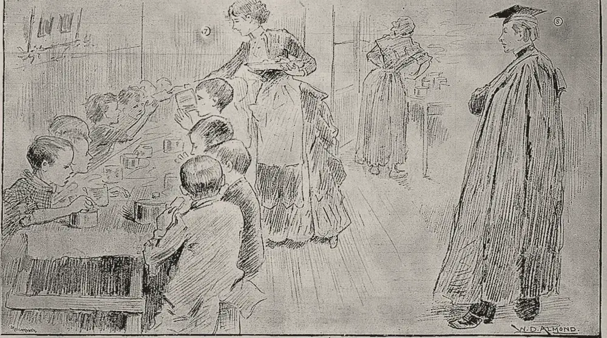

· Edición 26 · 6 min de lectura
Comida en el colegio: el contrato se acaba antes que las clases, y Brasil y Colombia ya probaron cómo cubrir el año

Dibujo de William Douglas Almond, 1888 · CC BY 4.0, colección Wellcome, vía Wikimedia Commons
Comida en el colegio: el contrato se acaba antes que las clases, y Brasil y Colombia ya probaron cómo cubrir el año
Ver todo el tema, de principio a fin →
En pocas palabras. El Programa de Alimentación Escolar, el PAE, da desayuno o almuerzo a millones de estudiantes de colegios públicos. La ley lo ordena desde el primer día de clases hasta el último. Aun así, cada enero cientos de miles empiezan sin él, y la Contraloría advierte que unos 600.000 podrían terminar el año igual. Hay salida: Brasil gira el dinero por cada día de clase, sin esperar a que alguien firme a tiempo, y en Colombia un experimento mostró que avisarles a los padres hace que los operadores cumplan más.
Qué hacer con esto
Para ir pensando. La comida de febrero se decide ahora, entre octubre y noviembre, cuando gobernaciones y alcaldías tramitan las vigencias futuras. Y 2027 es el último año de los gobiernos locales, cuando esos permisos no se pueden aprobar salvo excepciones, según la guía de la Unidad: el arranque de 2028 también merece atención.
Cómo prepararse. Preguntar en el colegio si el contrato del PAE alcanza hasta el último día de clases de este año. Si no, el primer canal es el rector y el Comité de Alimentación Escolar; la Contraloría recibe denuncias.
Ojo con el cuento. «Cobertura histórica» cuenta estudiantes inscritos, no días en que comieron. La pregunta útil es: ¿desde qué día y hasta qué día? En 2026 se anunció la cobertura más alta de la historia, 85,5%, y ese mismo enero unos 800.000 estudiantes empezaron las clases sin comida escolar.
Qué podríamos exigir. Que el dinero llegue por día de clase, como en Brasil; contratos firmados antes de diciembre; que cada entidad publique en cuántos días de clase hubo comida; y mensajes a los padres con el menú y un canal de queja, como en Nariño y Cesar.
Cómo se conecta. La parte que pone la Nación sale del presupuesto de 2027 (edición 3), que las plenarias votan del 13 al 15 de octubre: la misma votación en la que se juegan los laboratorios de la Unidad de Búsqueda (edición 22).
Qué pasó. Piense en un comedor que abre después de que empiezan las clases y cierra antes de que terminen. Así funciona, en buena parte del país, la comida escolar.
El 29 de septiembre, la Contraloría General, la entidad que vigila el dinero público, publicó 32 auditorías del PAE de 2025:
- Contratos que se acaban. En 13 entidades territoriales certificadas (los departamentos y ciudades que manejan sus colegios), los contratos terminaron o están por terminar, sin uno nuevo ni dinero asegurado. Unos 600.000 estudiantes podrían quedarse sin comida lo que resta del año. Es un riesgo, no un corte confirmado.
- Dinero mal gastado. 41 hallazgos con posible daño fiscal por 39.139 millones de pesos; de cada 10 pesos señalados, 3 son sobrecostos en raciones y en el pago a quienes cocinan.
- Los que nunca entran. Con una cobertura de 87%, cerca de un millón de estudiantes de colegios públicos no recibe el PAE.
Cómo llegamos aquí.
- Dos calendarios que no coinciden. Las clases van de enero o febrero a noviembre. Cada gobernación o alcaldía contrata a un operador privado con el dinero de cada año; si firma tarde, el comedor abre tarde. La Ley 2167 de 2021 permite comprometer dinero del año siguiente, las llamadas vigencias futuras. Permite; no obliga. Para 2024, de 96 entidades que reportaron, 70 las tramitaron.
- Se repite cada enero. En febrero de 2025, la Contraloría contó más de 781.000 estudiantes afectados porque el PAE no empezó a tiempo. En enero de 2026, unos 800.000 en 12 entidades.
- Cada quien pone menos. La ley exige que cada aportante suba su aporte cada año. Para 2026, 30 entidades pusieron menos que en 2024, según un informe citado por la prensa.
¿Hay salida? Sí, y vale la pena, porque la comida en el colegio funciona.
- Ayuda a no dejar el colegio. Un estudio de la Universidad de los Andes, de Sofía Zárate, Catherine Rodríguez y Fabio Sánchez, siguió a más de 14 millones de estudiantes durante siete años. Como el PAE llegó a los colegios en años distintos, compararon a quienes ya lo tenían con estudiantes parecidos que todavía no. Según Sánchez, de cada 100 sin PAE, unos 6 dejan el colegio en un año; con PAE, unos 4,5. Y quienes comieron en el colegio tuvieron 11 puntos más de probabilidad de terminar el bachillerato.
- Brasil: el dinero sigue al estudiante, no al contrato. Su programa nacional, el PNAE, alimenta a unos 40 millones de estudiantes. El Gobierno federal gira el dinero a estados y municipios de forma automática, sin convenio, en hasta diez cuotas entre febrero y noviembre. La cuenta es simple: matriculados, por 200 días de clase, por un valor fijo por estudiante. Un consejo de padres y docentes vigila en cada municipio. Y desde 2009 la ley obliga a comprar al menos 30 de cada 100 reales a la agricultura familiar; un estudio de 2025 encontró que eso subió los ingresos de esas fincas.
- Colombia: avisarles a los padres. En 208 colegios de Nariño y Cesar, investigadores del BID, el Banco Interamericano de Desarrollo, mandaron mensajes de texto a los padres sobre lo que debía servirse y cómo quejarse, y pusieron a universitarios a hacer visitas sencillas. Según el artículo publicado en 2024, los operadores incumplieron menos.
- Colombia ya copió una parte. La Ley 2046 de 2020 obliga a los programas públicos de alimentos a comprar al menos 30% a pequeños productores locales, según Colombia Compra Eficiente.
Pero ojo.
- Brasil tampoco cumple todo. Cerca de la mitad de los municipios no llega a ese 30%, según la Alianza Global contra el Hambre y la Pobreza, que Brasil impulsó. Y una revisión de 2021 encontró que muchos consejeros no conocen bien las reglas que vigilan.
- Los estudios tienen límites. Si los colegios que recibieron antes el PAE ya eran distintos, el efecto medido puede estar inflado. En Nariño y Cesar, los colegios de comparación también se enteraron, y eso hace difícil medir el tamaño exacto del efecto.
Quién decide y cuándo
Quién decide. Las 97 entidades territoriales certificadas contratan el PAE, y sus asambleas y concejos aprueban las vigencias futuras. La Unidad Alimentos para Aprender pone parte del dinero y fija las reglas; el Congreso aprueba la parte nacional.
Cuándo. La Unidad recomienda tramitar las vigencias futuras entre agosto y noviembre. Las plenarias votan el presupuesto de 2027 del 13 al 15 de octubre. Las clases de 2027 empiezan entre finales de enero y comienzos de febrero. (Conocimiento general.)
Cómo participar. Cada colegio tiene un Comité de Alimentación Escolar con padres, y los contratos se publican en el Secop, el portal de contratación pública. (Conocimiento general.)
Seguimiento de la decisión
Pendiente · plazo:
Gobernaciones y alcaldías de las 97 entidades territoriales certificadas en educación, con aprobación de asambleas y concejos; la Unidad Alimentos para Aprender cofinancia: Contratar el PAE de 2027 con vigencias futuras para que empiece el primer día de clases y cubra todo el calendario, y asegurar la comida hasta el final de 2026 en las 13 entidades que señaló la Contraloría.
Prometido desde · 3 plazos incumplidos
La Ley 2167 de diciembre de 2021 ordena dar el PAE desde el primer día y durante todo el calendario. Al menos en 2024 (Córdoba y Cesar), 2025 (más de 781.000 estudiantes afectados) y 2026 (unos 800.000) arrancó tarde en varias entidades. El plazo es la recomendación de la Unidad de tramitar las vigencias futuras entre agosto y noviembre.
La paradoja del día
Desde diciembre de 2021, la ley ordena dar la comida escolar desde el primer día de clases. Desde entonces, la noticia de cada enero es cuántos estudiantes empiezan sin ella.
Para conversar
La pregunta. Cuando un colegio pasa semanas sin comida escolar, ¿quién debería responder: el operador, el gobernante que firmó tarde o la Nación que gira el dinero?
Para leer más
El hambre, de Martín Caparrós (Planeta, 2014; reeditado y puesto al día por Literatura Random House). Una crónica larga por los lugares donde se pasa hambre, de la India y Níger a Estados Unidos y España, y por las razones de que siga pasando en un mundo que produce comida de sobra. Disponible en Santo & Seña
Repensar la pobreza, de Abhijit V. Banerjee y Esther Duflo (Taurus, 2012; original en inglés, Poor Economics, 2011). Dos premios Nobel de Economía revisan con experimentos qué funciona contra la pobreza, con capítulos sobre la nutrición y sobre la escuela. Ayuda a ver por qué un plato de comida puede cambiar lo que pasa en un salón de clase.
¿Le interesa ver las fuentes?
24 fuentes: 6 académicas, 9 oficiales, 2 de organizaciones, 7 de prensa.
- Prensa Asuntos Legales. Contraloría detectó hallazgos fiscales por 39.139 millones en recursos del PAE
- Prensa Noticias RCN. Contraloría alertó graves irregularidades en el PAE: más de 39.000 millones comprometidos
- Prensa El Colombiano. Contraloría detectó hallazgos fiscales por 39.000 millones e irregularidades reiteradas en el PAE
- Oficial Contraloría General de la República (vía Ámbito Jurídico). Comunicado: más de 781.000 niños afectados por la inoportunidad en el suministro del PAE (febrero de 2025)
- Prensa Consultorsalud. Contraloría advierte afectación de cerca de 800.000 estudiantes en 12 entidades por el desfase entre el calendario escolar de 2026 y el PAE
- Prensa La Silla Vacía. Contraloría: cerca de 800 mil estudiantes en 12 entidades sin PAE al iniciar el calendario de 2026
- Prensa El País (Cali). Más de 860.000 estudiantes podrían iniciar 2026 sin alimentación escolar en Colombia
- Oficial Congreso de Colombia. Ley 2167 del 22 de diciembre de 2021 (alimentación escolar durante todo el calendario académico)
- Oficial Ministerio de Educación Nacional. La financiación del PAE no es opcional: alcance de la Ley 2167 de 2021
- Oficial Unidad Alimentos para Aprender. Circular externa 006: directrices para el inicio oportuno del PAE en 2026
- Oficial Unidad Alimentos para Aprender. Anexo técnico administrativo y financiero: guía de planeación financiera del PAE
- Oficial Ministerio de Educación Nacional. Unidad Alimentos para Aprender hace llamado a gobernadores y alcaldes para garantizar el inicio oportuno del PAE en 2024
- Prensa Radio Nacional de Colombia. Programa de Alimentación Escolar llegó al 85,5 % de cobertura en 2026
- Académica VoxDev (Zárate, Rodríguez y Sánchez, Universidad de los Andes, 2024). The power of a meal: school feeding has wide-ranging, long-term effects on education
- Académica VoxDev (entrevista a Fabio Sánchez). Free school meals: the world's biggest social programme
- Académica Banco Interamericano de Desarrollo (Keefer y Roseth, 2021). Curbing Grand Corruption in the Contracting Out of Public Services: Lessons from a Pilot Study of the School Meals Program in Colombia
- Académica Journal of Comparative Economics (2024). Transparency and grand corruption: Lessons from the Colombia school meals program
- Oficial FNDE, Ministerio de Educación de Brasil. Movimentação financeira do PNAE: perguntas e respostas
- Oficial Congreso de Brasil. Lei 11.947, de 16 de junho de 2009 (alimentação escolar)
- Organización Alianza Global contra el Hambre y la Pobreza. Brazil: National School Feeding Program (PNAE)
- Académica Revista de Economia e Sociologia Rural (2025). Análise dos impactos do Programa Nacional de Alimentação Escolar (PNAE) sobre a agricultura familiar no Brasil
- Académica Research, Society and Development (2021). School food council (CAE): the challenges faced by councilors
- Oficial Colombia Compra Eficiente. Compras públicas locales de alimentos: Ley 2046 de 2020
- Organización Programa Mundial de Alimentos. State of School Feeding Worldwide 2024
Glosario
- PAE: Programa de Alimentación Escolar. Da un complemento alimentario (desayuno, almuerzo o refrigerio) a estudiantes de colegios públicos.
- Entidad territorial certificada (ETC): departamento, distrito o municipio que maneja por su cuenta sus colegios públicos. Hay 97, y cada una contrata su PAE.
- Unidad Alimentos para Aprender: entidad del Ministerio de Educación que fija las reglas del PAE y pone parte del dinero.
- Vigencias futuras: permiso para comprometer, este año, dinero del presupuesto del año siguiente. Sirve para firmar en noviembre un contrato que empiece a operar en enero.
- Operador: empresa o fundación contratada para comprar, preparar y servir la comida.
- PNAE: Programa Nacional de Alimentación Escolar de Brasil.
- Comité de Alimentación Escolar: grupo de padres, estudiantes y docentes de cada colegio que acompaña y vigila el PAE.
- Secop: Sistema Electrónico de Contratación Pública, donde se publican los contratos del Estado.
Nota metodológica
Hicimos unas 55 búsquedas en español, inglés y portugués: barrido de noticias del 7 al 9 de octubre (Colombia, América Latina y mundo), revisión de las decisiones abiertas de ediciones anteriores y búsquedas dirigidas sobre el PAE, sus evaluaciones y los programas de Brasil. No pudimos abrir ningún documento completo; trabajamos con resúmenes, fichas y resultados de búsqueda, y no atribuimos a los estudios más de lo que dicen sus resúmenes. De 24 fuentes, 17 no son de prensa.
Hoy hay una sola edición de noticias. Ningún otro tema llegó a 17 con un hecho nuevo: no rellenamos. La segunda edición del día, la 27, es «La semana».
El hecho que reactiva el tema es el informe de la Contraloría del 29 de septiembre. El PAE no se había tratado en Otra lectura.
Quedó sin verificar o con límites:
- La cobertura de 2026 cambia según la fuente: 87% según la Contraloría y 85,5% según el Gobierno anterior. Usamos la de la Contraloría para el millón de estudiantes por fuera.
- Las cifras de enero de 2026 vienen de dos alertas distintas: 860.000 estudiantes en 17 entidades, según el Ministerio de Educación, y unos 800.000 en 12, según la Contraloría. Usamos la segunda, que es posterior y mide estudiantes ya afectados; la conocemos por dos medios, no por el comunicado.
- Las 30 entidades que pusieron menos dinero en 2026 vienen de un informe citado por El País (que también habla de 32 entidades sin el aumento de ley y de un faltante de 342.000 millones de pesos); no encontramos el documento.
- Las cifras de deserción (6 y 4,5 de cada 100) son aproximadas y las dijo Fabio Sánchez en una entrevista; el efecto de 11 puntos en el bachillerato viene del resumen del estudio. Es un estudio con datos administrativos que aprovecha la llegada escalonada del programa, no un ensayo aleatorizado.
- El experimento de Nariño y Cesar lo conocemos por el resumen del documento del BID de 2021 y del artículo de 2024; no tenemos el tamaño del efecto.
- Lo de Brasil viene de documentos del FNDE, la ley de 2009, un estudio de 2025 que compara fincas justo por encima y por debajo de un umbral, y una revisión de 2021 publicada en una revista de menor exigencia editorial. La cifra de la mitad de municipios viene de una iniciativa que el propio Brasil impulsó.
- El 30% de la Ley 2046 lo tomamos de Colombia Compra Eficiente; no encontramos cifras de cumplimiento en el PAE.
- El Comité de Alimentación Escolar de cada colegio, el Secop y las fechas de inicio de clases son conocimiento general.
- El número de plazos incumplidos (3) cuenta los años con retrasos documentados al comenzar las clases desde la Ley 2167: 2024, 2025 y 2026. Puede haber más.
Puntaje de impacto. Filtro primero (las cuatro condiciones de nudo) y luego puntaje de 1 a 3 en alcance, gravedad, duración, cercanía y decisión en curso; gravedad y cercanía valen doble (máximo 21). Un segundo o tercer tema entra solo con 17 o más, con un hecho nuevo y si no repite un asunto de los últimos siete días. Para los temas del mundo, la cercanía se mide por el canal por el que llegan a Colombia.
| Tema | Alcance | Gravedad | Duración | Cercanía | Decisión | Total | Resultado |
|---|---|---|---|---|---|---|---|
| Alimentación escolar (PAE) | 3 | 3 | 2 | 3 | 2 | 19 | Elegido (edición 26) |
| Salario mínimo de 2027 | 3 | 2 | 2 | 3 | 2 | 17 | Sin cifras públicas; tratado el 1 de octubre |
| Venezuela, transición sin fecha (canal: migración) | 3 | 2 | 2 | 3 | 1 | 16 | Sin decisión con fecha |
| El Niño y hambre en Centroamérica (mundo; canal: precios de la comida) | 3 | 3 | 2 | 2 | 1 | 16 | Canal aún proyectado; El Niño ya tratado |
| Guerra Estados Unidos-Irán (mundo; canal: combustibles) | 3 | 2 | 2 | 3 | 1 | 16 | Sin hecho nuevo |
| Ébola en Kenia (mundo; sin canal claro) | 2 | 3 | 2 | 1 | 1 | 13 | Lejano |
| Austeridad en el Gobierno | - | - | - | - | - | - | Anuncio |
El PAE pasa las cuatro condiciones de nudo: se repite (retrasos en 2024, 2025 y 2026), tiene un mecanismo (contratos territoriales atados al año fiscal, vigencias futuras que la ley permite pero no exige y aportes que no suben), alguien lo puede cambiar (gobernaciones, alcaldías, asambleas, concejos, la Unidad y el Congreso) y el daño es medible (cientos de miles de estudiantes sin comida en semanas de clase y 39.139 millones en hallazgos).
El grabado es un dibujo de William Douglas Almond para The Illustrated London News, de 1888, sobre los almuerzos para los niños de las escuelas públicas del barrio de Shoreditch, en Londres. Lo usamos porque muestra una de las primeras formas de comida escolar; es de otra época y no muestra nada de hoy. Recortamos la escena del comedor y dejamos por fuera los retratos de niños y los rótulos en inglés.
De los dos libros, uno está en Santo & Seña (El hambre); lo confirmamos en su ficha de la tienda. Autor, años y editoriales los verificamos en catálogos de bibliotecas, fichas de librerías y una entrevista al autor.